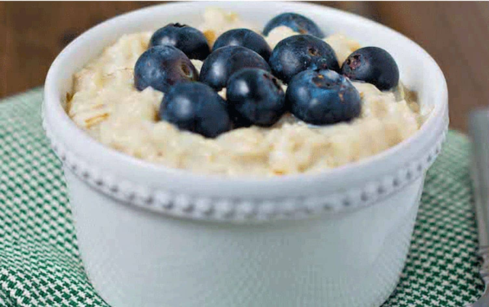

Protein Oatmeal

High protein Tasty Oatmeal
This easy to make high protein oatmeal only requires a few ingredients and is a great option for starting anyone's day!
ingredients
- Instant Oats
- Stevia
- Peanut Butter
- Chocolate Protein Powder
- Toppings (optional)
Steps
- Firstly cook your oats to specification on the package.
- Next add in peanut butter and protein powder.
- Lastly stir in some stevia to taste, and add toppings if desired. Enjoy!